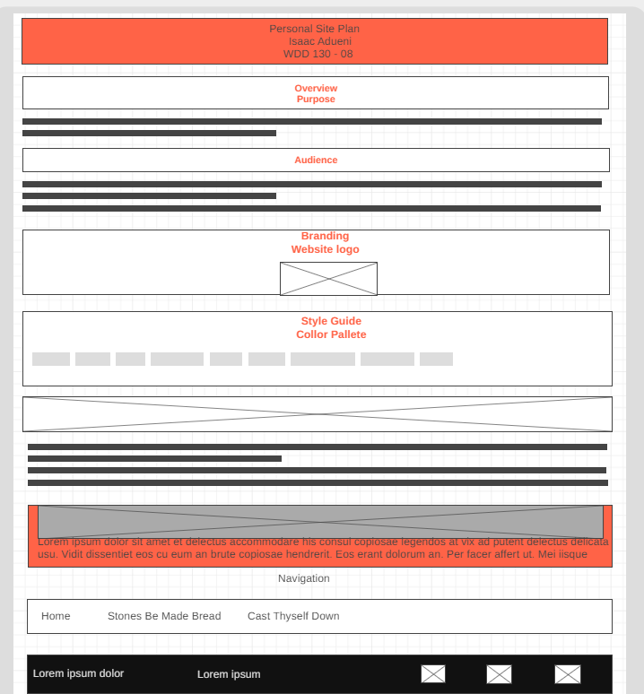
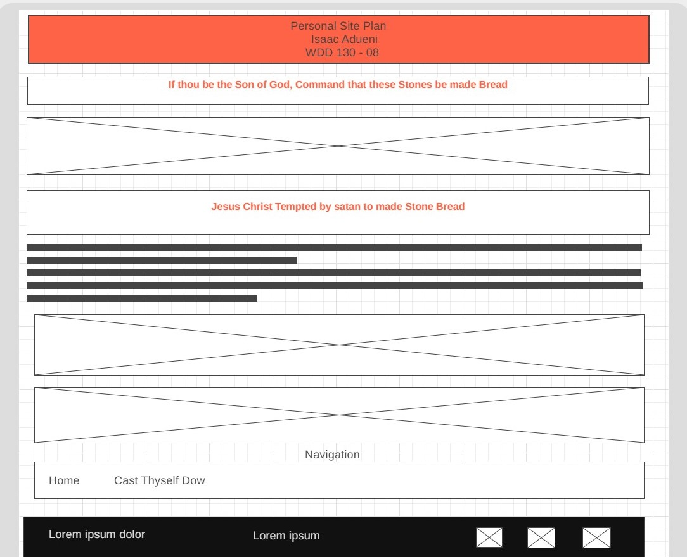
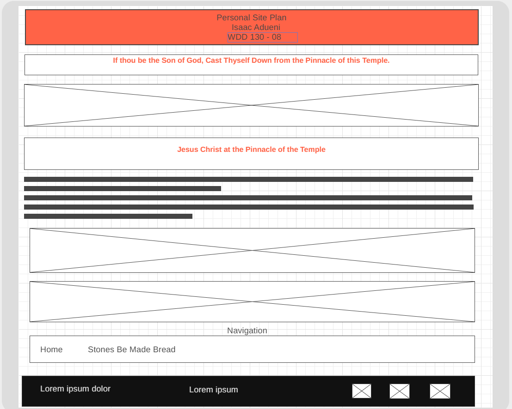

If thou be the Son of God, Command that these Stones be made Bread

Jesus Christ Tempted by satan to made Stone Bread
Whatever else Satan may do, he will certainly appeal to our appetites. Far better for him to try to use our natural needs than struggle to create artificial ones in us. Jesus experienced the real and very understandable hunger for food by which he would sustain his mortal life. He has fasted for forty days and forty nights. Why not eat? He seems ready to break his fast, or surely must soon. Why not simply turn the stones to bread and eat? The temptation is not in the eating. He has eaten before, he will soon eat again, he must eat for the rest of his mortal life. The temptation comes in Satan’s suggestion to do it this way—to get relief the easy way, by abuse of power and without a willingness to wait for the right time and the right way. It is the temptation to be the convenient Messiah. Why do things the hard way? Why deny yourself satisfaction when with only a slight compromise you might enjoy this much-needed nourishment? But Christ will not

Navigation
Site Map
Create three wireframes for your site. One for each page and list them here
Home
[Any additional details about home that the wireframe does not make clear]
Stones Be Made Bread
[Any additional details about page 2 that the wireframe does not make clear]
Cast Thyself Down
[Any additional details about page 3 that the wireframe does not make clear]
